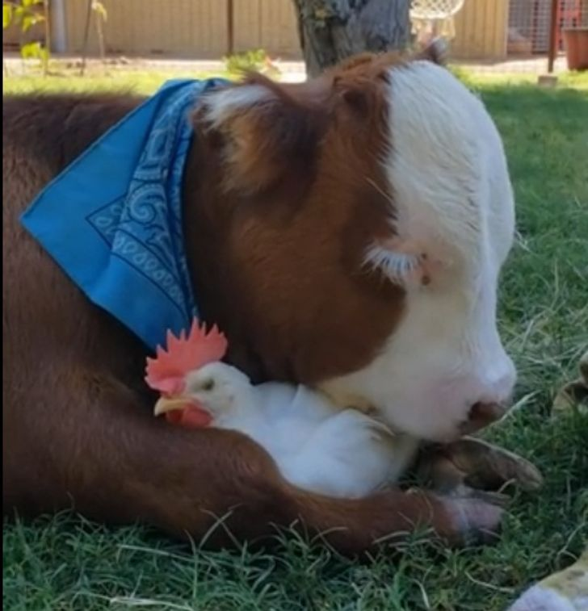
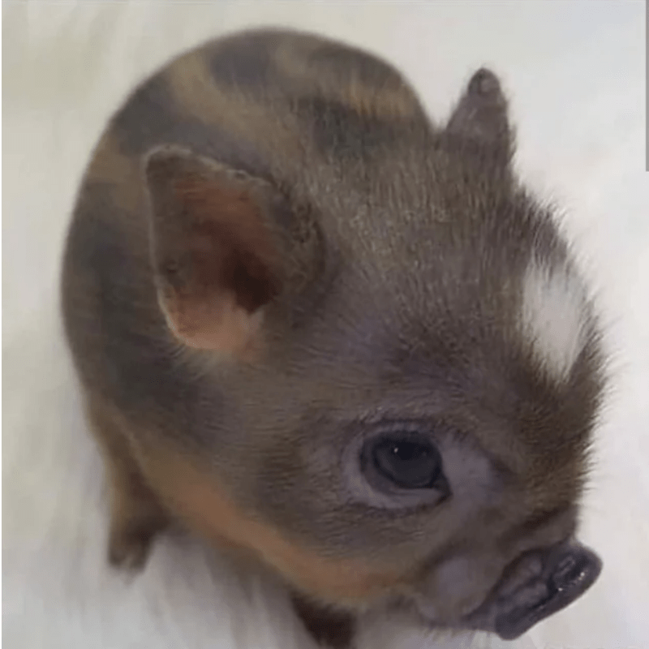
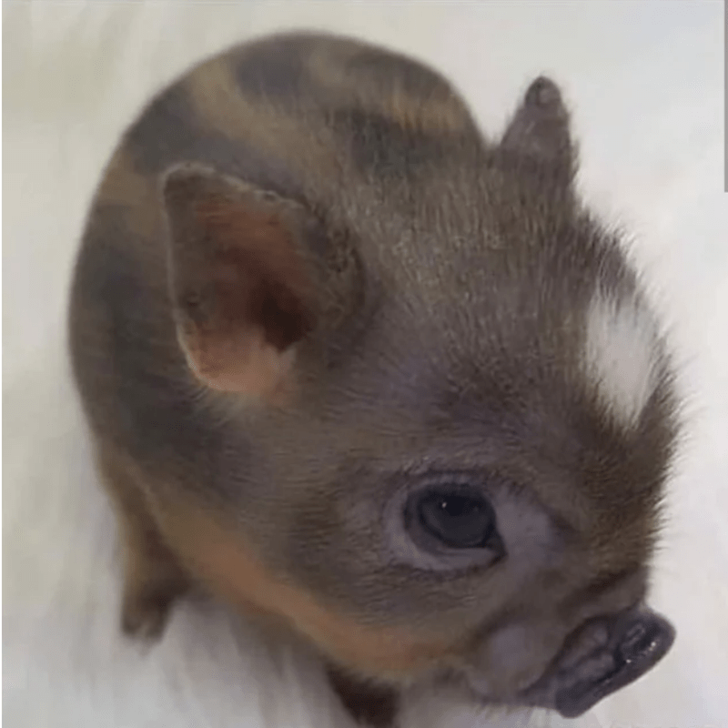

Haowen Gan
Hi, I'm Haowen Gan, and I'm deeply passionate about the intricate workings of the business world. Currently pursuing my degree in Business Economics, I thrive on dissecting market trends and delving into economic theories to understand how businesses operate within broader economic landscapes. From studying consumer behavior to analyzing supply and demand dynamics, I find joy in unraveling the complexities of our global economy. With each lecture and assignment, I'm not just learning concepts—I'm envisioning how I can apply them in real-world scenarios to drive positive change and foster growth. Whether it's crafting strategic business plans or conducting financial analyses, I'm eager to leverage my education and skills to make a meaningful impact in the business realm.
Hey there, I'm Haowen Gan, and I've spent countless hours behind the scenes of bustling restaurants, perfecting the art of balancing plates and serving smiles. As a restaurant worker, I've learned that success in any role boils down to dedication, adaptability, and a genuine passion for customer satisfaction. From mastering the intricacies of menu items to navigating fast-paced environments with grace under pressure, I've developed a unique skill set that goes beyond just taking orders and clearing tables. Every interaction with patrons has taught me the importance of empathy and effective communication, skills that I carry with me into every aspect of my life, including my pursuit of a career in business economics.
Hi, I'm Haowen Gan, and I'm on a journey to bridge the gap between my current role in the service industry and my aspirations in the field of business economics. With a solid foundation in economic theory and a hunger to apply my knowledge in a meaningful way, I'm actively seeking opportunities to transition into a career that aligns with my academic pursuits. From conducting market research to crafting strategic business plans, I'm excited to leverage my analytical mindset and problem-solving skills to make a tangible impact in the business world. With each step forward, I'm driven by the belief that my background as a restaurant worker has equipped me with invaluable experiences and insights that will shape me into a well-rounded professional ready to tackle any challenge that comes my way.
Experience
Warehouse worker
• Organizing the product
• Product purchases
• Experience with management
Uber food Deliveries
• Familiar with maps
• Organizing each foods
• Time management
• driving skills
Education
UC Riverside
Portfolio



